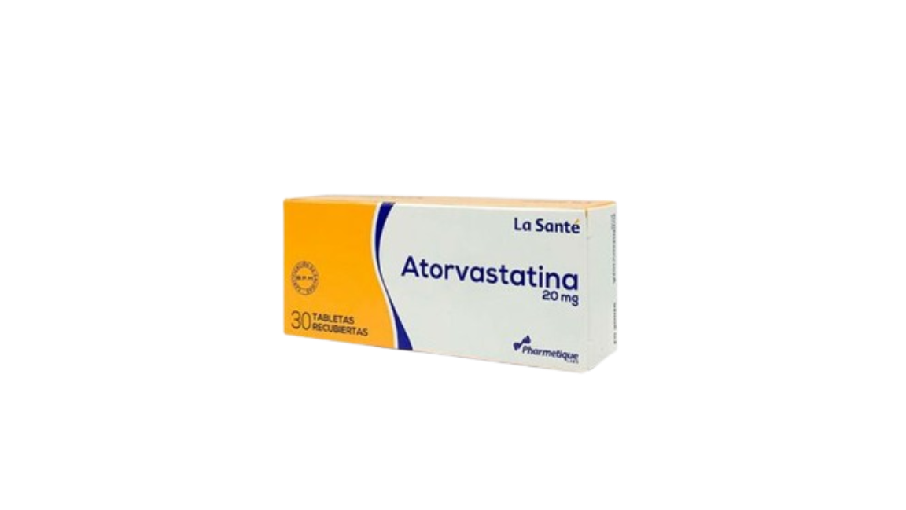
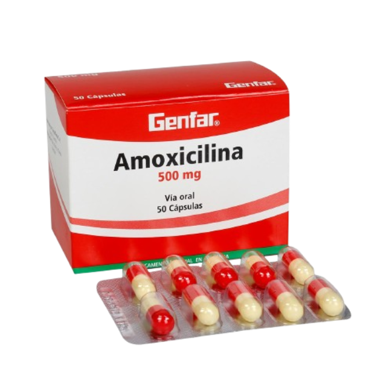

| NOMBRE DE MEDICAMENTO |
FUNCIONES |
CONSECUENCIAS |
IMAGEN |
| PARACETAMOL |
INFLUYEN EN CÓMO PERCIBIMOS LAS SITUACIONES, EVALUAMOS OPCIONES Y ACTUAMOS. AUNQUE MUCHAS DECISIONES PARECEN RACIONALES, EN REALIDAD ESTÁN GUIADAS POR EMOCIONES QUE NOS AYUDAN A VALORAR RIESGOS, ANTICIPAR CONSECUENCIAS Y PRIORIZAR LO QUE NOS IMPORTA. |
A DOSIS ELEVADAS PUEDE DAÑAR EL HIGADO |
 |
| ATORVASTATINA |
SE USA JUNTO CON DIETA, PERDIDA DE PESO Y EJERCICIO PARA REDUCIR EL RIESGO DE MIIOCARDIO Y ACCIDENTE CARDIOVASCULAS Y PARA DISMINUIR LA PROBABILIDAD DE QUE SEA NECESARIA LA CIRUGIA CARDIACA EN EPRSONAS QUE PADECEN ENFERMEDADES CARDIACAS O PUEDEN DESARROLLARLLAS |
MALESTAR DIGESTIVO (DIARREA, GASES, ACIDEZ), DOLOR MUSCULAR Y ARTICULAR, DOLOR DE CABEZA Y PROBLEMAS PARA DORMIR |
 |
| AMOXICILINA |
SE USA PARA TRATAR CIERTAS INFECCIONES CAUSADAS POR BACTERIAS, COMO NEUMONÍA, BRONQUITIS (INFECCIÓN DE LAS VÍAS RESPIRATORIAS QUE VAN A LOS PULMONES) E INFECCIONES DE LOS OÍDOS |
NAUSEAS, DIARREAS O ERUPCIONES EN LA PIEL E INFECCIONES POR HONGOS EN BOCA O VAGINA |
 |